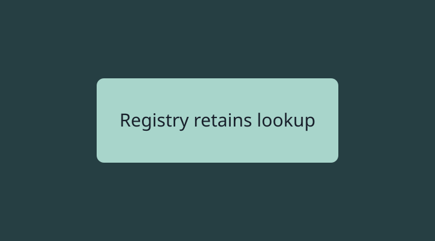

Compare corresponding topics
Options are synthetic source-review examples. The embedded gallery checks retained viewer state, not application behavior.
Lifetime
The temporary Transport owns access to the session lookup. This deliberately longer explanation keeps the consequences beside the ownership claim. Disconnect may remove the lookup even when the Session remains running.
A successful reconnect alone does not establish original identity. Compare corresponding topics across the row.
Disconnect
Evidence
Identity continuity remains unproven.
Lifetime
The Registry owns stable lookup until explicit expiry.
Disconnect
Evidence
Supplied edits establish the source change.
Observe identity before and after reconnect.

Lifetime
Retain lookup through a different owner.
Evidence
No disconnect implementation was supplied for this option.
One detailed view at a time
Image reveal remains separate
